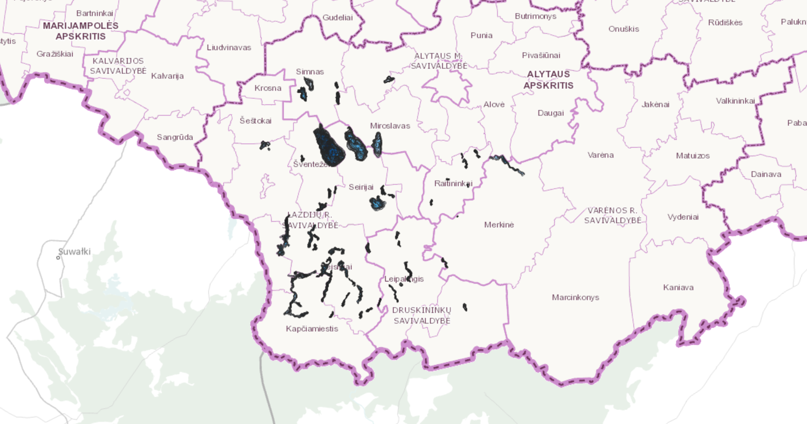

Mano žemėlapiai
Pirmasis praktinis darbas
Antras praktinis darbas

Penktasis žemėlapis
Lietuvos batimetrija Alytaus rajone ir savivaldybės
Peržiūrėti žemėlapį
Lietuvos batimetrija Alytaus rajone ir savivaldybės
Peržiūrėti žemėlapį